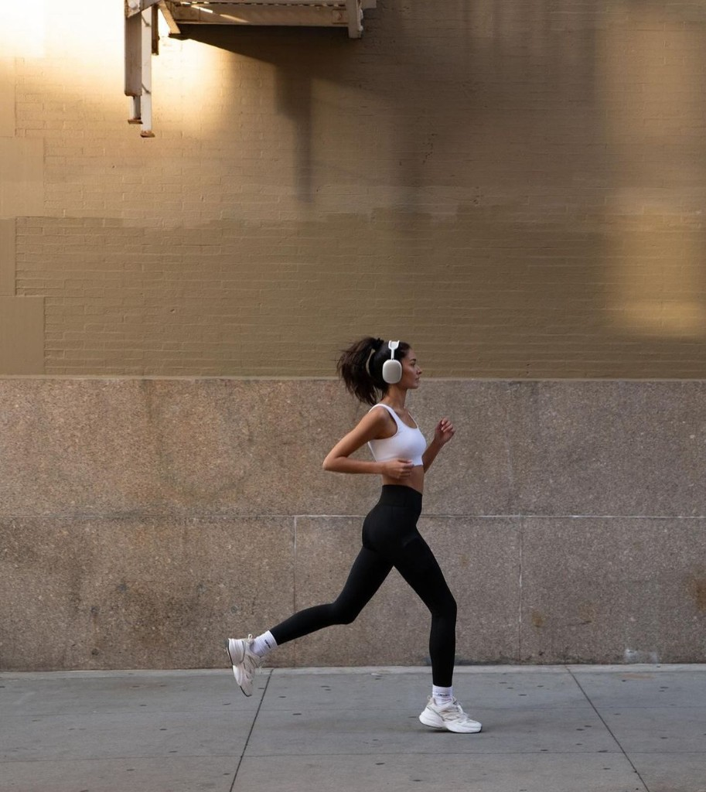
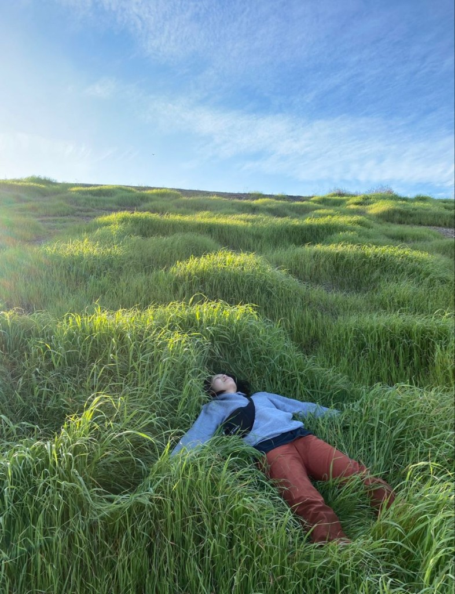

01
轻跑与慢走
8–15 分钟 · 降低紧张唤起
今天也辛苦了
先照顾好情绪，再面对学业、职场与社交。

01
8–15 分钟 · 降低紧张唤起
02
5 分钟 · 适合久坐后

01
躺下 · 感受呼吸与身体重量
02
吸 4 · 呼 6 · 重复八轮
根据最近情绪，生成一段舒缓纯音乐
Check-in
选一个情绪，标上强度，写下可能的触发点。
此刻感受
平静
选情绪 · 标强度 · 语音或文字记下触发
Insight
数据只留在本机，帮你看见重复出现的压力源。
累计记录
0 条
先记录几条，洞察会出现在这里。
Journal
从近到远，回看你留下的痕迹。
本工具不能替代专业心理咨询。若持续低落或有自伤念头，请寻求身边人或专业帮助。